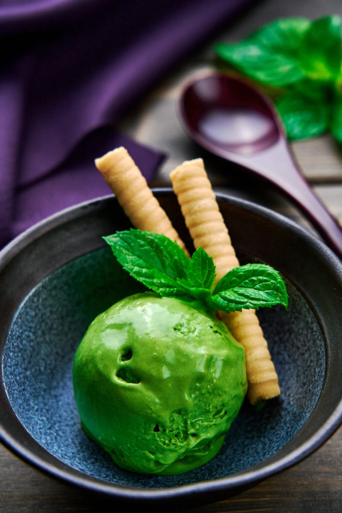

Matcha Ice Cream

Description
This smooth and creamy Matcha Ice Cream comes together from just three ingredients and does not require an ice cream machine. Verdant green and packed with green tea flavor, this is the best way to make no-churn ice cream.
Matcha Green Tea Ice Cream is a popular flavor of ice cream around the world. Here in Japan, it's known as Matcha Ice (抹茶アイス), and it's made by adding a particular type of powdered green tea called matcha to an ice cream base before freezing it.
For this Matcha Ice Cream recipe, I'm sharing an easy method to make a velvety smooth ice cream that doesn't require any unfamiliar chemicals or churning. Instead, all you need is a bowl and a whisk.
Ingredients
- 12 grams matcha
- 100 grams sweetened condensed milk
- 225 grams heavy cream
- Powdered sugar
Steps
- Sift the matcha into a medium bowl.
- Use a spatula to stir the sweetened condensed milk into the matcha until it's smooth and free of lumps.
- Pour the cold cream into the bowl and stir the mixture together, being sure to scrape up all of the condensed milk sticking to the bottom and sides of the bowl. Taste the mixture and add powdered sugar if you don't feel it's sweet enough.
- Now use a whisk or egg beater to whip the mixture until the surface of the cream shows ripples, and it's about the consistency of thick pancake batter.
- Pour the Matcha Ice Cream base into a container with a lid and then put it in your freezer overnight.
- Remove the ice cream from the freezer about 5 minutes before serving, so it softens a little before scooping.